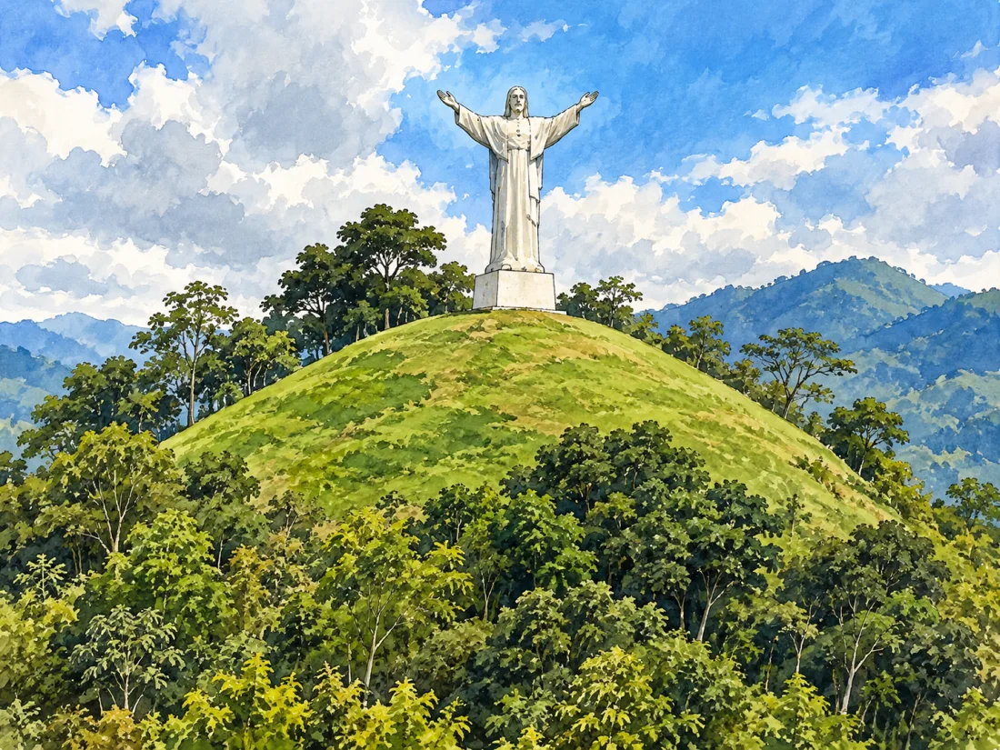
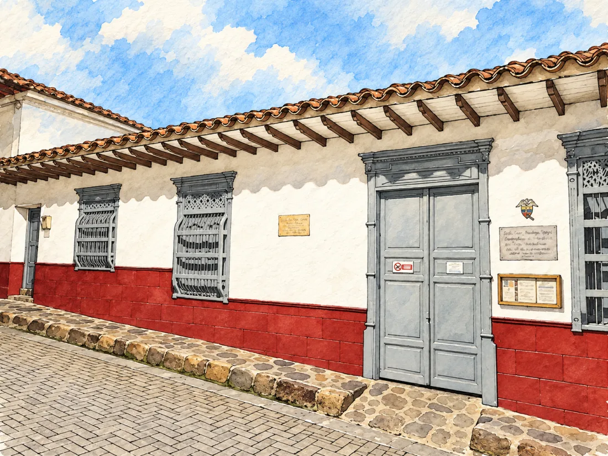
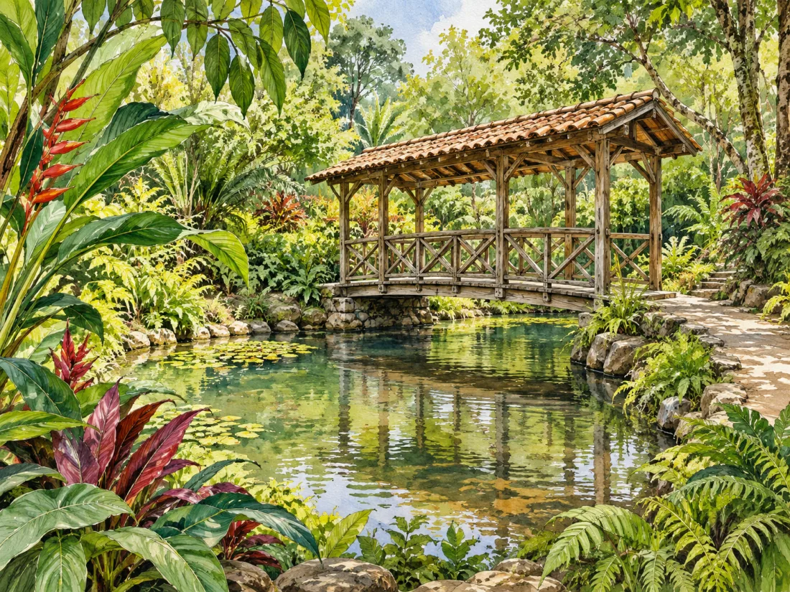

01
01centro histórico
Caminhe pelo parque principal e pelas ruas próximas para conhecer a arquitetura e o cotidiano da cidade.
Localize no mapa ↗Sudoeste de Antioquia · Colômbia
Ruas para explorar, café para partilhar e comércios que contam histórias. Um destino entre montanhas para viver do seu jeito.
O que ver em Jericó ↓Conheça sua história ↓Você tem um negócio em Jericó? Deixe-nos seus dados para participar →
Conheça o destino
Fundada em 1850, Jericó cresceu em torno do comércio, do café e das estradas dos tropeiros. O seu centro histórico preserva ruas, casas e varandas que contam parte dessa história e foi reconhecido como património cultural nacional em 2018.
Jericó é também o lugar onde nasceu Laura Montoya, conhecida como Santa Madre Laura e a primeira santa colombiana. Sua história como educadora e missionária faz parte da identidade da cidade; Sua cidade natal é um dos lugares para se aproximar desse legado.

Ideias para a sua visita
Escolha os locais que despertam a sua curiosidade e organize o seu passeio ao seu ritmo.
01Caminhe pelo parque principal e pelas ruas próximas para conhecer a arquitetura e o cotidiano da cidade.
Localize no mapa ↗
02Um miradouro para contemplar a vila e as montanhas que a rodeiam.
Localize no mapa ↗ 03
03A igreja rosa é uma das fachadas que chamam a atenção quando se percorre Jericó e se conhece o seu património religioso.
Localize no mapa ↗
04Conheça um lugar ligado à história de Laura Montoya e à tradição religiosa de Jericó.
Localize no mapa ↗
05Um jardim com trilhas, lago e vegetação para caminhar e observar aves, perto da área urbana.
Localize no mapa ↗Um percurso de montanha com mirantes para o Sudoeste de Antioquia. Consulte o acesso à trilha e as condições locais antes de subir.
Localize no mapa ↗Atrativo natural rural de Jericó, conhecido como Chorros de Quebradona. Confirme com fontes locais onde começa o percurso e as condições atuais de acesso.
Localize no mapa ↗Atrativos de Jericó · Governo de Antioquia ↗ · Mais informações sobre o destino na Colômbia Travel ↗
Conecte as partes da sua jornada
Saiba como se locomover, onde ficar e comer, o que fazer e os serviços que você precisa. Explore no seu ritmo.
Ainda não há locais publicados neste diretório.
Localize os locais que pretende visitar e consulte cada local sobre os seus horários, condições de entrada e acessibilidade antes de organizar o seu passeio.
Localizar Jericó no mapa ↗Não há eventos futuros publicados.
Você está organizando um evento? Vamos conversar →Faça parte da exploração de lugares
Não fique de fora.
Se você tem hotel, restaurante, bar ou loja, oferece transporte ou organiza passeios e atividades, queremos conhecer o seu negócio.
Deixe-nos suas informações. Entraremos em contato para conversar sobre como incluir seu negócio no portal.
Eu quero participar→